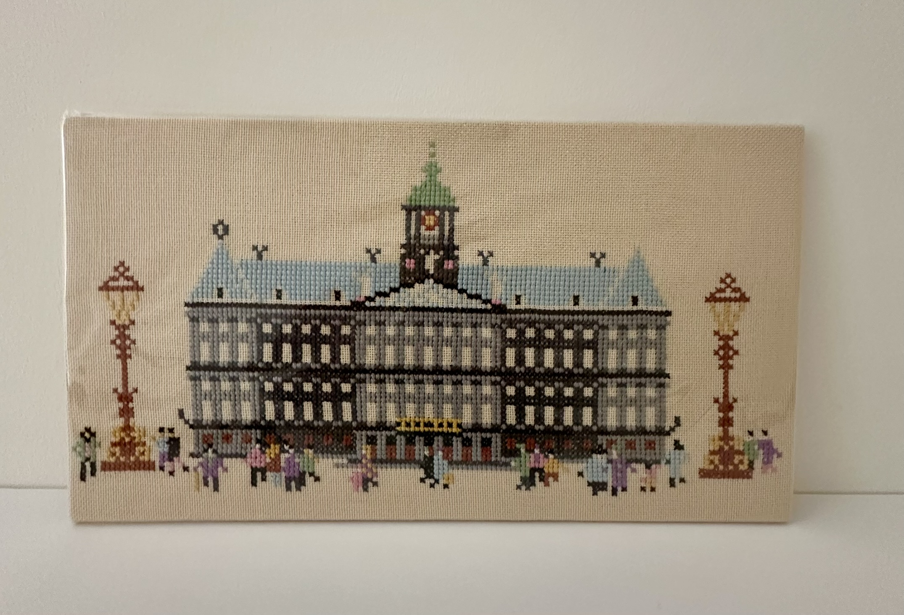

Welkom bij Stitching Dutch Heritage
De plek waar oude hollande borduurtradities herleven.
Folkloredag Zaanse Schans
16 augustus 2025
Contact

Uitgelicht werk
Amstelredam 1650
Borduren in Nederland
Geïnspireerd door eeuwenoude Nederlandse borduurtradities en historische merklappen.
Levend erfgoed
Van Zaanse molens tot koninklijke wapens - elk borduurwerk vertelt een verhaal.
Onze missie
Elke steek met zorg gezet, elke kleur zorgvuldig gekozen voor authentieke uitstraling.
Onze borduurcollectie
×

Borduurwerk Titel
Beschrijving van het borduurwerk...